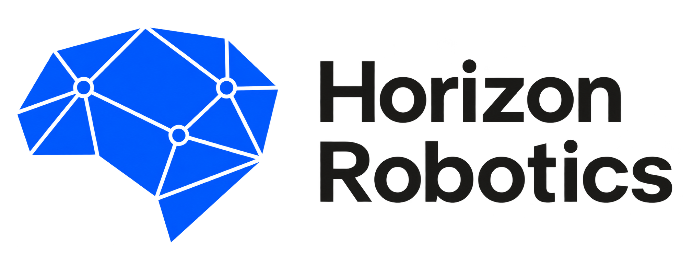
Horizon Robotics
Research InternPhysical VLM Research, mentored by Shaoyu Chen.
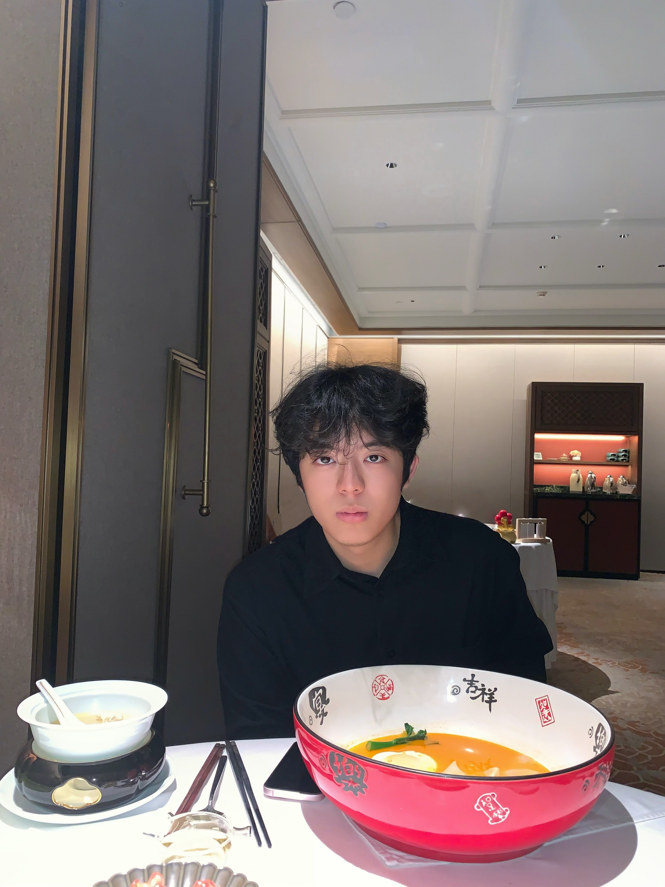
Ph.D. Candidate in Artificial Intelligence · Advised by Yan Huang & Liang Wang
I am a Ph.D. candidate at
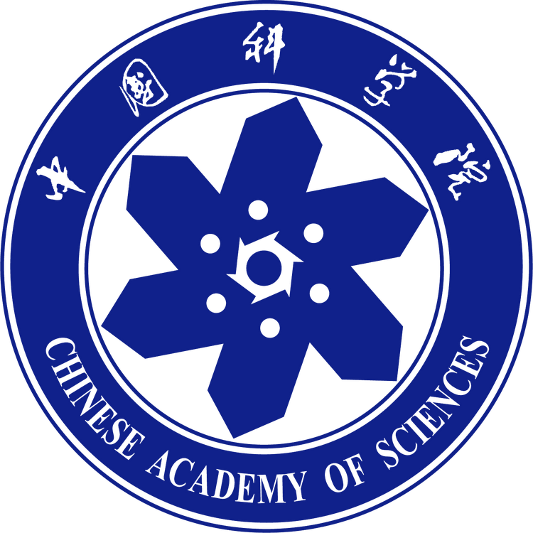
My research centers on Embodied Intelligence (Robotics & Game Agents) and Multimodal Models. My long-term goal is to develop intelligent agents that can assist people in both the physical world and virtual environments, including games.
My current research focuses on VLM as Policy and World Models.
Encoding linguistic semantics and visual signals within a shared latent space, enabling neural networks to comprehend the physical world across both spatial and temporal dimensions.
Leveraging upstream multimodal understanding to empower embodied agents—translating rich perceptual representations into world modeling, reasoning, and closed-loop action policies across physical robots and virtual environments.
No publications match your current filter.
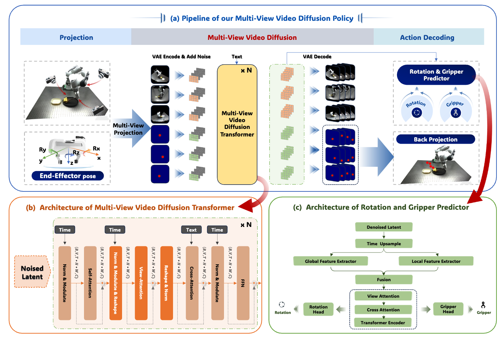
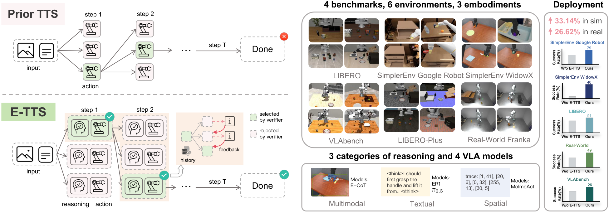
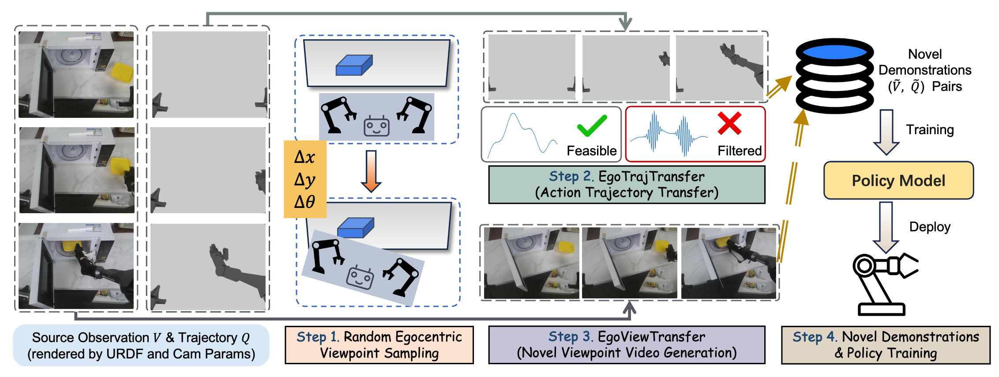
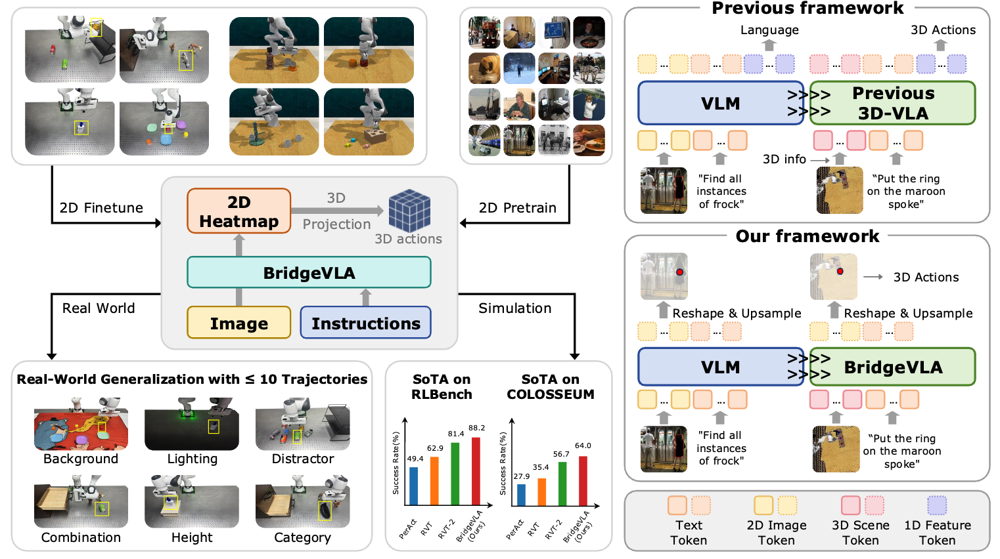
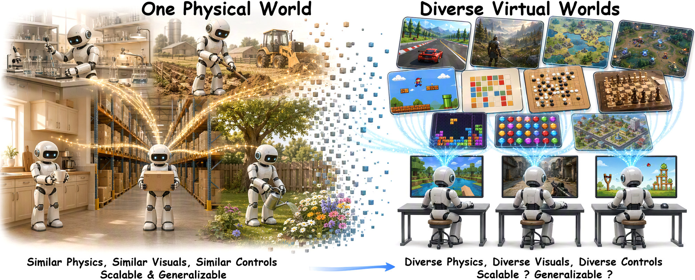


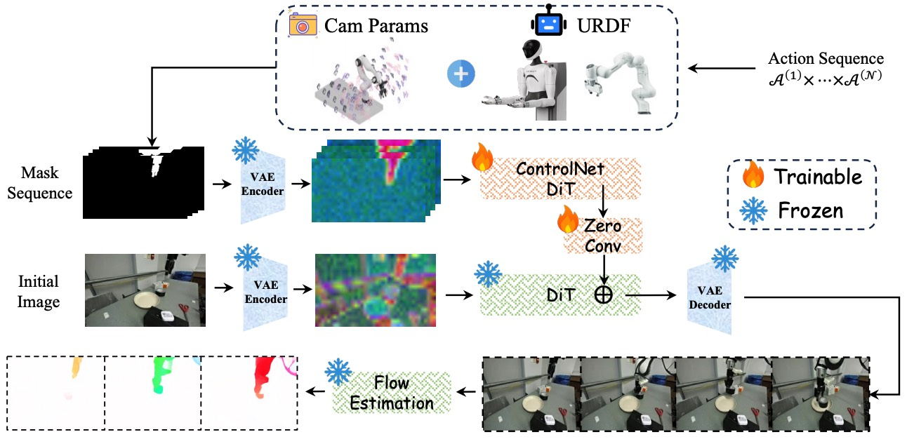
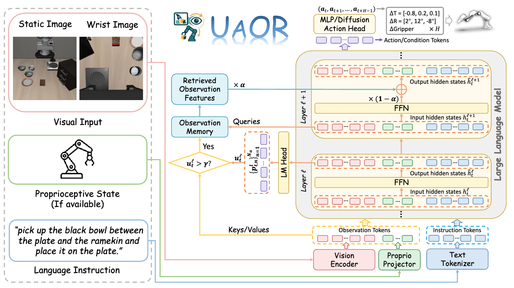
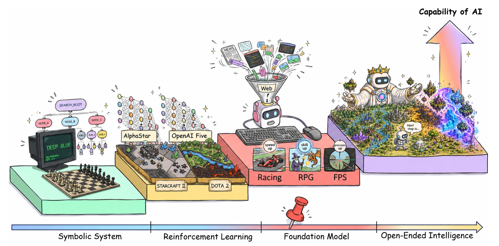

Physical VLM Research, mentored by Shaoyu Chen.
Vision-Language-Action model pretrain.
Multimodal Agent research in the Visual Computing Group.